Ubuntu File Server
I built a file server using an Ubuntu Server running on a Proxmox host. This guide walks through every step I took from installing and configuring Proxmox to creating the Ubuntu Server VM and finally setting up Samba for file sharing.
Proxmox VE Intro
Proxmox VE is an open-source virtualization platform that supports hosting multiple virtual machines (VMs) and Linux containers (LXC). It can run a wide range of workloads, including Linux distributions, Windows operating systems, media servers such as Jellyfin, and many others. Proxmox was selected for this file server project due to its flexibility and extensive customization options, which will allow for easy additions in the future.
Proxmox VE Installation & Configuration
The Proxmox VE 9.0 installation ISO was obtained directly from the official Proxmox website. After downloading the ISO file, it was then copied to a Ventoy-formatted USB drive. Ventoy is a useful tool that enables booting multiple ISO images from a single USB device without the need for software such as Rufus.
With the Ventoy USB prepared, the system was booted using the Proxmox VE ISO. Once the installer loaded, the graphical installation option was selected to begin the setup process as shown in the example image below.

Next, To ensure the Proxmox host always uses the same IP address (static), a DHCP reservation was created on the router. This was done by locating the computer’s MAC address, which runs the Proxmox server in the router’s DHCP client list, and assigning it a reserved IP address. The exact steps may vary depending on the router you have, but the process is generally straightforward. Using a static IP address is important for Proxmox, as it ensures consistent access to the web interface. It also makes it easier to assign additional static IP addresses later, for example, when creating the Ubuntu Server VM.
PuTTY was also used to ensure I could successfully remote into the Proxmox environment, as shown here.
Web Interface
With the Proxmox installation complete and the network configured, the web interface can be accessed through a web browser using the static IP address as seen here.
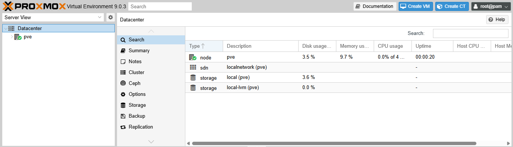
A Dell OptiPlex 3050 was used for this setup which I made sure to include two storage devices: an SSD which is used to store the Proxmox VE environment and an NVMe drive, totaling to 1TB of capacity. This provides sufficient space for initial testing and deployment, though additional storage will likely be required later as the file server grows and as other services such as a media server are added to the Proxmox environment. Before configuring storage in Proxmox, the secondary drive intended for use with the file server was wiped. After clearing the device, the Proxmox storage directory was accessed to create the new disk resource as shown below.
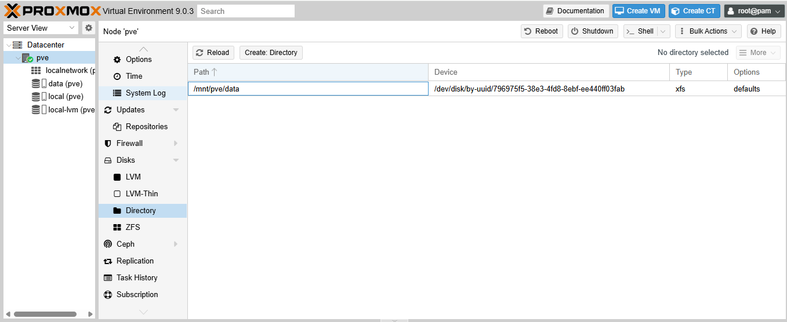
FYI, adding more storage is a perk of having proxmox available as shown below
Uploading an ISO File
Step 1: Upload ISO Image
To upload the installation ISO, open the Proxmox web interface and select the storage location (local or local-lvm). Next, navigate to the ISO Images and click Upload to upload the ISO file from your computer as shown here.
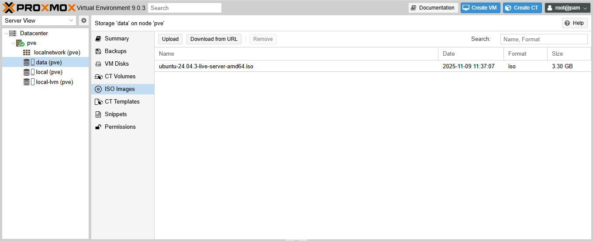Step 2: Create the Virtual Machine
After uploading the ISO file, create a new virtual machine by selecting "Create VM" in the proxmox interface. Follow the on-screen setup wizard and configure the VM according to your requirements .
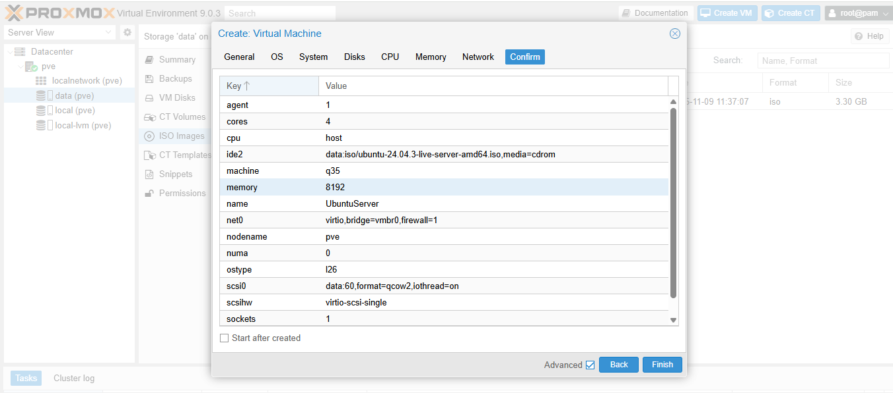For extra security, a snapshot and a backup of the virtual machine were created, as shown below.
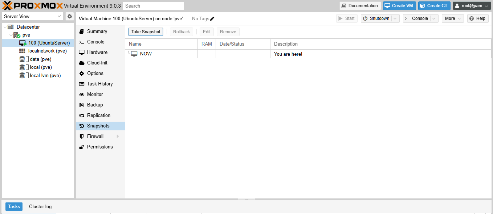 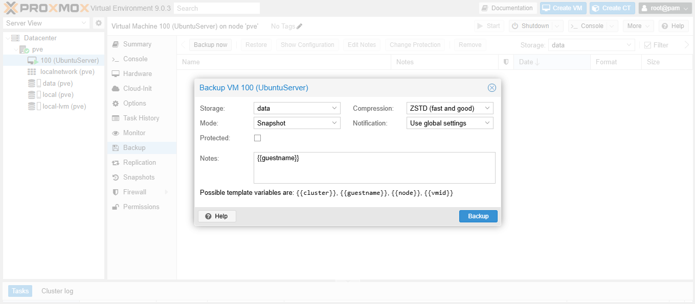Ubuntu Server Intro
Ubuntu Server is a version of the Ubuntu operating system designed specifically for server environments, allowing you to run services such as file servers, web servers, databases and more.
Ubuntu Server Setup & Configuration
To begin configuring the Ubuntu Server, a new virtual machine was created in Proxmox VE using the previously uploaded ISO file. During the installation process, the on-screen setup wizard was followed and adjusted as needed. For this setup, OpenSSH Server was enabled to allow remote access using the Proxmox Command Line Interface (CLI) and others in the future, and a static IP address was assigned instead of using DHCP, consistent with the earlier network configuration steps.
Now that the Ubuntu Server is up and running, the very first thing to do is check for available updates with the command sudo apt update and sudo apt upgrade. Furthermore, the command sudo apt install unattended-upgrades was used to enable automatic updates, which checks for and installs updates automatically.
Next, OpenSSH was installed by running the command sudo apt install openssh-server so the Ubuntu Server could be remotely accessed through the Proxmox root and other terminal emulators using ssh [username]@[ip address]
Samba File Server
Step 1: Install Samba
The first step in getting the file server up and running was installing Samba by running the command sudo apt install samba, which will be used to provide file-sharing services/capabilities. Samba was chosen because this was the first file-sharing server being built, and it offered a straightforward setup by following the guide provided on the Ubuntu Webpage.
One useful thing to note is that when services are installed on Ubuntu Server, their configuration files are typically stored in the /etc directory.
Step 2: Configure Samba
A directory was created using mkdir, which represents the name of the file server. Permissions were then configured using sudo chmod -R 0775. In short, chmod stands for “change mode,” and the permission value 0775 grants full read, write, and execute access to the owner and group. The screesnhot below shows permissions that have been set for the file server
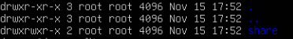Next, the Samba configuration file was edited to add a new directory as a shared folder. This was done by running the command sudo nano /etc/samba/smb.conf. Nano was chosen due to familiarity, though any text editor could be used.
Upon opening the Nano text editor, a new profile was added at the bottom of the file and named fileshare, matching the directory name created earlier with mkdir. Below you will find the full profile configuration that was made along with a screenshot of the output.
Furthermore, a user account was created to access the files, and ownership of the directory was changed to this account using chown -R [account:account][path]
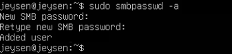After creating the authentication account to access the folder, the Samba service was restarted to apply the changes using the command sudo service smbd restart.
To verify that the Samba server is up and running, the command sudo service smbd status was executed. This command shows whether the service is active, inactive, or failed, and in this case, it was active as shown below.

Finally, the firewall was updated to allow Samba traffic by running the command sudo ufw allow samba. Afterward, running the command sudo ufw status confirmed that Samba traffic is allowed.
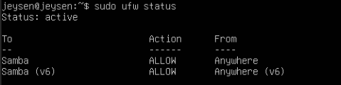Windows
To test the setup, both Windows and macOS were used. Below are the results for each system. On Windows, File Explorer was opened, then This PC was selected from the left hand side. From there, a network folder was added by right-clicking and entering \\[ipaddress]\fileshare
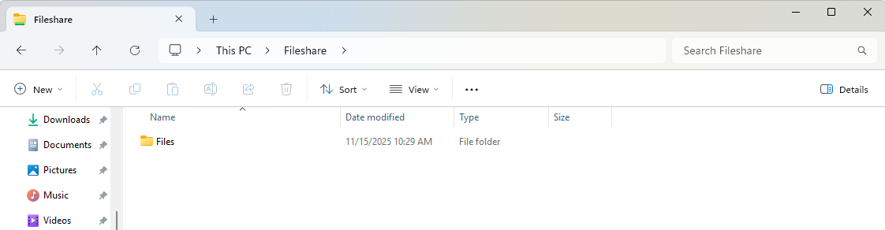macOS
On macOS, the Go menu (located at the top of the desktop) was used, followed by Connect to Server, where smb://[ipaddress]/fileshare was entered.
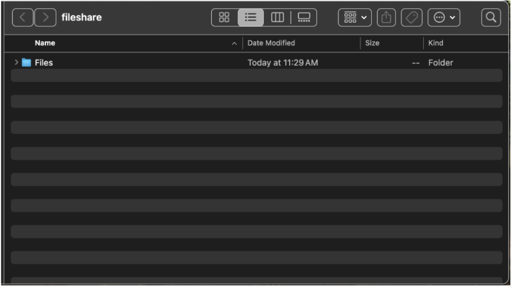Troubleshooting
Issue 1: Proxmox – disk/partition '/dev/sda2' is mounted (500)
I tried to wipe a disk in Proxmox and was receiving the error “disk/partition ‘/dev/sda2’ is mounted (500)”. After doing some research, I realized that because the Proxmox installation itself is on this disk, it cannot be wiped. The solution was to install an NVMe drive, which the OptiPlex 3050 has a slot for, and this resolved the issue. Below is the message that I was receiving. DIY-Viking was the source of where I was able to find a solution to this issue.
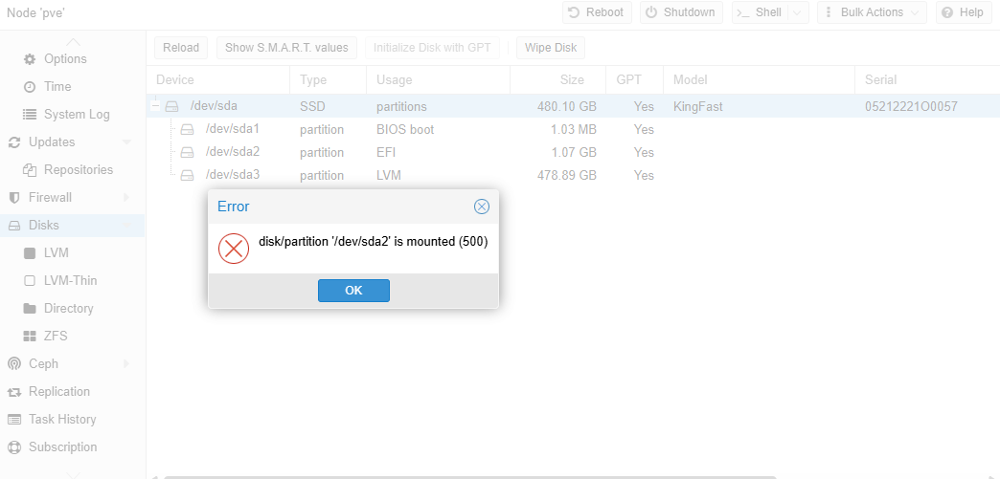